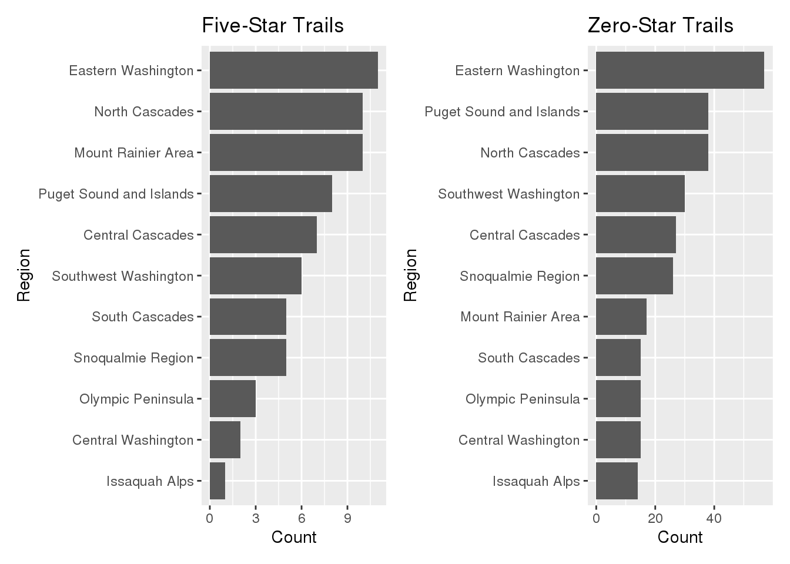

library(tidyverse)
library(here)
library(patchwork)dat <- read_rds(here('data', 'tidytuesday', 'data', '2020', '2020-11-24', 'hike_data.rds'))
trail_data <- dat %>%
separate(location, c('region', 'location'), sep = ' -- ') %>%
separate(length, c('length', 'unit'), sep = ' (?=miles)') %>%
mutate(length = as.numeric(length), gain = as.numeric(gain), highpoint = as.numeric(highpoint), rating = as.numeric(rating))## Warning: Expected 2 pieces. Missing pieces filled with `NA` in 38 rows [34, 73,
## 271, 306, 537, 559, 599, 652, 672, 708, 718, 749, 799, 800, 835, 836, 889, 1014,
## 1033, 1100, ...].five_star_trails <- trail_data %>%
filter(rating == 5) %>%
group_by(region) %>%
summarize(count = n())
five_star_trails$region <- factor(five_star_trails$region,
levels = five_star_trails$region[order(
five_star_trails$count, decreasing = FALSE)])
p1 <- ggplot(five_star_trails, aes(x = region, y = count)) +
geom_col() +
coord_flip() +
labs(title = 'Number of Five-Star Trails per Region')
zero_star_trails <- trail_data %>%
filter(rating == 0) %>%
group_by(region) %>%
summarize(count = n())
zero_star_trails$region <- factor(zero_star_trails$region,
levels = zero_star_trails$region[order(
zero_star_trails$count, decreasing = FALSE)])
p2 <- ggplot(zero_star_trails, aes(x = region, y = count)) +
geom_col() +
coord_flip()
p1 + p2
five_star_trail_features <- trail_data %>%
filter(rating == 5) %>%
select(features)
trail_features_unlist <- tibble(feature = unlist(five_star_trail_features$features,
recursive = FALSE))
trail_features_count <- trail_features_unlist %>%
group_by(feature) %>%
summarize(count = n())
trail_features_count$feature <- factor(trail_features_count$feature,
levels = trail_features_count$feature[order(
trail_features_count$count, decreasing = FALSE)])
ggplot(trail_features_count, aes(x = feature, y = count)) +
geom_col() +
coord_flip()